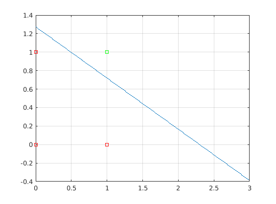

clear all;
close all;
clc;
w0=rand;
w1=rand;
w2=rand;
Wi=[w0 w1 w2];
Yi=[-1 -1 -1 1];
x0=[1 1 1 1];
x1=[0 0 1 1];
x2=[0 1 0 1];
Xi = [x0;x1;x2];
umbral=2;
Wi
Xi
Yi
[Wf,Yf,N]=perceptron_metodo1(Wi,Xi,Yi,umbral);
Wf
Yf
N
X1=0:0.01:3;
X2=(-Wf(2)/Wf(3))*X1-(Wf(1)/Wf(3))+(umbral/Wf(3));
plot(X1,X2)
hold on
grid on
for j=1:1:4
if Yi(j)==1
plot(Xi(2,j),Xi(3,j),'--gs')
else
plot(Xi(2,j),Xi(3,j),'--rs')
end
end
return;
for conjunto=1:1:3
w0=rand;
w1=rand;
w2=rand;
w0i=w0;
w1i=w1;
w2i=w2;
x0=1;
x1=[0 0 1 1];
x2=[0 1 0 1];
Sd=[-1 -1 -1 1];
disp('----------------------------------------------------------')
disp('Tabla de verdad para AND:')
disp(['x1 x2 sd']);
for i=1:1:4
disp([num2str(x1(i)),' ',num2str(x2(i)),' ',num2str(Sd(i))]);
end
intentos=0;
validador=0;
while validador < 4
validador=0;
intentos=intentos+1;
for i=1:1:4
f(i)=x0*w0+x1(i)*w1+x2(i)*w2;
disp(['f(',num2str(i),')=',num2str(w0),'*',num2str(x0),' + ',num2str(w1),'*',num2str(x1(i)),' + ',num2str(w2),'*',num2str(x2(i)),'=',num2str(f(i)),'=',num2str(f(i))]);
d=2;
if f(i)<d
Sr(i)=-1;
else
Sr(i)=1;
end
if Sr(i)==Sd(i)
validador=validador+1;
else
fd=Sd(i);
fd=(Sd(i)-Sr(i));
fd=0.1*(Sd(i)-Sr(i));
Aw0=x0*fd
Aw1=x1(i)*fd;
Aw2=x2(i)*fd;
w0=w0+Aw0;
w1=w1+Aw1;
w2=w2+Aw2;
end
end
end
disp('----------------------------------------------------------')
disp('Los pesos iniciales son:')
disp(['w0: ',num2str(w0i)])
disp(['w1: ',num2str(w1i)])
disp(['w2: ',num2str(w2i)])
disp('----------------------------------------------------------')
disp('Los pesos finales son:')
disp(['w0: ',num2str(w0)])
disp(['w1: ',num2str(w1)])
disp(['w2: ',num2str(w2)])
disp('----------------------------------------------------------')
disp('----------------------------------------------------------')
disp(['El numero de Interacciones necesarias son:',num2str(intentos)])
disp('----------------------------------------------------------')
X1=0:0.01:3;
X2=(-w1/w2)*X1-(w0/w2)+(d/w2);
plot(X1,X2)
hold on
grid on
for j=1:1:4
if Sd(j)==1
plot(x1(j),x2(j),'--gs')
else
plot(x1(j),x2(j),'--rs')
end
end
indice=conjunto+1;
simulacion(indice,1)=conjunto;
simulacion(indice,2)=w0i;
simulacion(indice,3)=w1i;
simulacion(indice,4)=w2i;
simulacion(indice,5)=w0;
simulacion(indice,6)=w1;
simulacion(indice,7)=w2;
simulacion(indice,8)=intentos;
end
colNames={'Experimento','Peso inicial w0','Peso inicial w1','Peso inicial w2','Peso final w0','Peso final w1','Peso final w2','No intentos'};
for i=1:size(simulacion,1)
row{i} = [''];
end
Wi =
0.9134 0.6324 0.0975
Xi =
1 1 1 1
0 0 1 1
0 1 0 1
Yi =
-1 -1 -1 1
Wf =
-1.0866 2.6324 1.0975
Yf =
-1.0866 0.0109 1.5457 2.6433
N =
7
